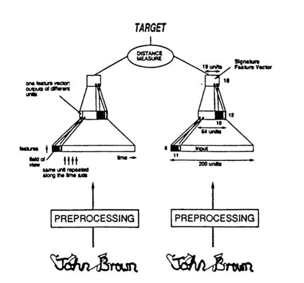

# Metric Learning
## What's a metric?
A metric is a distance function, or a function that takes two objects and gives the distance between them.
A distance is a measure of how far apart two things are in terms of a single (nonnegative) value.
For example: you could use the straight-line distance to say that the distance between the moon and the earth is 238900 miles, or you could use the Levenshtein distance to say that the distance between the words "scone" and "stone" is 1.
Remember that not all distance functions are metrics. In order for a function d(a,b) to be a metric, it must fulfill three axioms:
1. For all x, d(x,x) = 0. There is a reflexive relation in which the distance from anything to itself is 0.
2. For all x and y, d(x,y) = d(y,x). A metric must be symmetric.
3. For all (x,y,z), d(x,y) <= d(x,z) + d(y,z). That is, a metric must obey the triangle inequality.
The triangle inequality is a deep concept that I will try to explain simply. First, take any 3 points as vertices of a triangle. The inequality holds true if the length of every side is less than or equal to the sum of the other two sides.
If you are to define a distance over points, the points (with specified distances) should be able to form a proper (closed) triangle.
Intuitively, why is a metric useful?
Let's go through the axioms and what they entail.
1. This one should be obvious. What if someone told you that there's a non-zero distance from you to yourself: "So I have to walk a distance to where I am? Am I not where I am? Where am I? That makes no sense..."
2. The distance from A to B is the same as B to A.
3. If A is close to B, and B is close to C, then A is close to C (AC is bounded, AC <= AB + BC).
Finally, a metric space is just a pair (X,d) in which X is a set of objects and d is a function that gives the distance between elements in the set.
## Who wants a metric? An example.
Consider the problem of determining how similar two pictures are.
One (naive) solution might be to take the pixel-wise, straight-line distance between pictures.
However, the distance between pixels doesn't really correlate very well with the "true" (percieved or semantic) distance.
For instance, changes in lighting, pose, hat, hairdo, shirt color, etc, can greatly impact the pixel distance. However, our perception seems to be somewhat indifferent to these factors.
Unlike pixel distance, what we want is a metric that gives a meaningful distance between objects.
Metric learning provides exactly that; a learnable metric. It is excellent for metric-based methods like KNN, clustering, etc.
## Constructing a metric
Consider arranging a bunch of photos on a table so that similar photos are put closer to each other and dissimilar photos are placed further apart.
In order to say how similar any two photos are, we take a ruler and measure the distance between those two photos on the table. Sounds reasonable, right?
Alright, I'll admit that the "put the photo on the table, take the ruler..." analogy is a bit hand wavy, so I'll formalize the distance function a bit. Consider the function f(x) that (deterministically) places a photo, x, on the table. This function maps x to some "table" coordinates, eg x and y coordinates. We can then take the straight-line distance between two points in the "table space", yielding the final measure. Altogether, this looks like: d(a,b) = euclidean(f(a), f(b)), in which euclidean refers to the euclidean (aka straight-line) distance.
Question: does the function d constitute a metric? The answer is yes, and here's why: by first placing the objects on the table (ie, mapping pictures using f), we are moving to a new metric space over the set of table coordinates. It's as if we were handed the table coordinates rather than the original photos. And because we're using a metric function (eg euclidean) over these new coordinates, d is also a metric.
A few notes that generalize this concept:
- The "table" doesn't have to be a typical table. It could have more (or less) than 2 dimensions, and the coordinates don't even have to be numbers.
- We could use any metric in place of euclidean distance: cosine similarity, manhattan distance, hamming distance... whatever you want!
- The table space isn't directly useful. It is an example of a latent space, which is usually only useful for the specific task it was produced for (in this case, measuring distances with a given metric).
And a note for correctness:
- If f is not injective, then d will be a pseudometric because there may be distinct inputs mapped to the same place on the table, yielding a distance of 0. In practice this is usually unimportant.
## Learning a Metric: Metric Learning
What if that function that maps into the table space, f, were arbitrary? Photos would be scattered around the table.
Although the function d is still a metric, it isn't so useful; distances are meaningless if the table isn't organized.
Therefore, in order to refine the metric d, we must meaningfully place photos on the table using the function f.
We can parameterize the function f using parameters w, so that the table coordinates for a photo x is f(x,w), and the distance function is then d(a,b,w) = euclidean(f(a,w), f(b,w)). An illustration from
the original paper is found below:

Alright, it's learning time! Let's improve the performance of the metric, d, by adjusting its parameters w.
We'll say that the metric performs well when similar things are close together and dissimilar things are further apart.
As an example, imagine we had a dataset of people whereby each person had many photos taken.
We may then choose to adjust w so as to minimize the distance between photos of the same person, and maximize the distance between photos of different people. OK, let's get started!
We can now create a list of instances with which we'll train our metric.
Let's represent our data as a list of pairs, (x, id), in which x is a picture and id is the identifier (eg name or id of the person in the photo).
Let's represent each training instance as a triple, (a, b, same), in which a and b are pictures and same indicates whether they have the same identifier (eg are of the same person). The same indicator will be 1 when they're the same, 0 otherwise.
Remember that we'd like our metric to give large distances for photos of different people and small distances for photos of the same person.
When optimizing, we generally have to be very careful about what we ask for. If not for careful optimization, we would be likely to run into some unforseen weirdnesses.
For example, we can't only ask for points to be close together because then it would just put everything in the same place.
We can't simply ask for dissimilar photos to be far apart because (somewhat counterintuitively) we'd encourage everything to spread really far apart.
The objective we're going to use, the contrastive loss, takes the form:
L(a,b,w) = same * d(a,b,w)^2 + (1 - same) * max(0, margin - d(a,b,w))^2
In which margin is a positive number.
The max(0, margin - d(a,b,w)) component basically says that when distances for dissimilar objects exceeds the margin, the distance will not be penalized.
In plain english, we could outline the objective as:
- If the objects are similar, minimize the square of the distance
- If the objects are dissimilar and their distance is less than the margin, maximize the square of the distance
This sort of objective is simple yet fascinating. We could analogize the force of this loss to a spring-based system that has attractive springs and repulsive springs (whose lengths are bounded to the margin). If you've been keeping up with the visualization world, this loss should be reminiscent of techniques like
t-SNE
and Microsoft's more recent
LARGEVIS.
Cool stuff! Using gradient descent we can find parameters w that minimize the expected loss, L(a,b,w).
And just like that, we have learned a metric d and an embedding f.
I've implemented an example using pictures of digits from the MNIST dataset, in which pictures are considered similar if they are of the same digit. You can find it here on Google Colab.
Below is an animation of the the latent space during training.
Note that we are using (unseen) validation data.
Points with the same color are of the same digit.
 ---
If you want to learn more, check out
- paper on contrastive loss
- the original paper on siamese networks
---
If you want to learn more, check out
- paper on contrastive loss
- the original paper on siamese networks